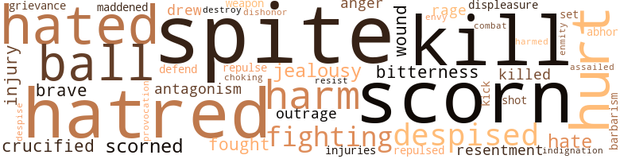

38 music-related terms matched in this text.
Most frequent terms in this topic: rap (4); music (4); sing (4); theme (4); singing (3)

clipping.n.01
Definition: an excerpt cut from a newspaper or magazine
| word |
sentence |
| clippings |
She gave me letters and newspaper clippings , showing that she had kept herself in - formed of everything concerning my father and his affairs . |
| clippings |
Here are also some newspaper clippings con - cerning her work . |
dance.v.03
Definition: skip, leap, or move up and down or sideways
| word |
sentence |
| danced |
Agnes danced around the room , exclaiming , " Oh , I am so happy ! " |
music.n.01
Definition: an artistic form of auditory communication incorporating instrumental or vocal tones in a structured and continuous manner
| word |
sentence |
| music |
He must turn the music for Agnes or she wanted him to drive the car for her , then she wanted him to tell some of the great cases he had won . |
| music |
That morning Lord Blankleigh on seeing Dian going to the music room , had followed her arid said , " Oh , Dian , my dear niece , give me permission to tell my wife all . |
| music |
Agnes had seen them enter the music room and it was not the first time that she had noticed the seemingly clandestine meeting . |
| music |
The guests were arriving , and the band was dis - coursing rare music in the grand ball room of Blank - leigh castle . |
piano.n.01
Definition: a keyboard instrument that is played by depressing keys that cause hammers to strike tuned strings and produce sounds
| word |
sentence |
| piano |
Alice went to the piano and was playing a lively tune when Mr. Graham was announced . |
place.v.16
Definition: sing a note with the correct pitch
| word |
sentence |
| place |
Remember , I place no commands on you , but I give you timely warning . " |
promenade.n.01
Definition: a formal ball held for a school class toward the end of the academic year
| word |
sentence |
| prom |
As for her part , she would never encourage her to be any other than what she was , the wife of a prom - ising attorney . |
| prom |
All the comfort that he could give this despairing lover was a prom - ise to talk the matter over with Zoleeta and let him know the result . |
rap.n.05
Definition: genre of African-American music of the 1980s and 1990s in which rhyming lyrics are chanted to a musical accompaniment; several forms of rap have emerged
| word |
sentence |
| rap |
Just then there was a rap on the door and she was pleased to see her husband enter , but one look at that cold , determined face showed her how useless any further appeal was . |
| rap |
Just then there was a rap at the door . |
| rap |
After reading the note , Mrs. Marceaux complimented her daughter on her cleverness and told her to destroy the note at once , but just at that moment there was a rap on the door . |
| rap |
Presently there was a gentle , hesitating rap on the half open door . |
scat.n.01
Definition: singing jazz; the singer substitutes nonsense syllables for the words of the song and tries to sound like a musical instrument
| word |
sentence |
| scat |
She dropped into a scat near where he could see her , at the same time remarking , that she must be getting old , and if he had no objections , she would rest there a moment . |
| scat |
She would have passed on but the driver had stopped , and as she came near he jumped off the scat . |
sing.v.02
Definition: produce tones with the voice
| word |
sentence |
| sing |
See how quiet she becomes when I touch her and sing to her . " |
| sung |
Neither Mrs. Slayton nor her son ever learned of the artist 's connection with them , nor when his fame was sung from continent to continent and when she had purchased one of his famous pictures , did she know that the artist descended from a negro slave , not only from the South , but from their own planta - tion , and was a half-brother of her son , William Slayton . |
| singing |
Zoleeta 's schoolmates vied with each other in singing her praises . |
| sing |
On my uncle 's plantation there are still many negroes who remained and they often sing such amusing songs . |
| sing |
After repeated calls from her cousins , she turned and entered the house , where they were soon discus - sing an important event . |
| sing |
After dinner when all had returned to the drawing room , Dian was pressed to sing . |
| sang |
She sang as she never did before and Kenneth was very proud of his wife . |
singing.n.01
Definition: the act of singing vocal music
| word |
sentence |
| singing |
Just as the first group named , of which Aline and Zoleeta were the center , had ceased speaking for a moment they heard Cath - erine distinctly say : " Anyone having negro blood in their veins always has a good voice for singing . |
| singing |
Zoleeta watched her lover until he disappeared from view , then turned and walked into the house singing softly as she went up the stairs , thus giving evidence of her happiness . |
song.n.01
Definition: a short musical composition with words
| word |
sentence |
| songs |
On my uncle 's plantation there are still many negroes who remained and they often sing such amusing songs . |
theme.n.03
Definition: (music) melodic subject of a musical composition
| word |
sentence |
| theme |
It was evident that Zoleeta was the theme of their conversation . |
| theme |
Then accompanied by her sis - ter , she descended to the dining-room where the trial was the theme of conversation . |
| theme |
Their devotion to each other was the theme of many con - versations . |
| theme |
Their beauty is the theme of every one . |
tone.v.01
Definition: utter monotonously and repetitively and rhythmically
| word |
sentence |
| chanted |
Thus felt a beautiful young girl as she stood en - chanted while the soft breeze gently blew her long black hair in confusion around her exquisite face . |
tune.n.01
Definition: a succession of notes forming a distinctive sequence
| word |
sentence |
| line |
She cpuld not read a line , but felt happier than she had at any time since she had been spirited away . |
| lines |
Another time while waiting for the doctor to re - turn , she opened a drawer in his desk and found that same picture with these lines written across the back , " Odene , my love . " |
| tune |
Alice went to the piano and was playing a lively tune when Mr. Graham was announced . |
| tune |
Harvey Graham was the son of a grocer , but some years ago he had fallen heir to a considerable for - tune , which he hastened to got rid of by gambling and riotous living and was looking around for means to replenish his fast diminishing fortune . |
| lines |
When Alice read those lines she became faint , her face was colorless , as she realized that Odene was free and that the doctor was forever lost to her . |
| tune |
One morning Mr. Andrews informed Zoleeta that in a few days she would be mistress of her entire for - tune thus making her one of the wealthiest heiresses in the whole country . |
133 violence-related terms matched in this text.
Most frequent terms in this topic: spite (10); hatred (7); scorn (7); hurt (6); hated (6)

abhor.v.01
Definition: find repugnant
| word |
sentence |
| abhor |
Do not jest with me for I would abhor you if that were the case . " |
aggravation.n.02
Definition: unfriendly behavior that causes anger or resentment
| word |
sentence |
| provocation |
The hour of sorrow is not the hour to cherish ill-natured feelings , it matters not how great the provocation . |
anger.n.01
Definition: a strong emotion; a feeling that is oriented toward some real or supposed grievance
| word |
sentence |
| anger |
Catherine , blinded by jealousy and anger , forget - ting the fact that her orphaned cousin had always shown her the utmost kindness , drove the shaft far - ther into the heart she had so cruelly wounded the day before . |
| anger |
And holding out his hand to the man that had spoken so scathingly to him , said : " I can not part in anger from one she loved so dearly , nor can I forget that we both loved her - God only knows which loved her best . " |
attack.v.01
Definition: launch an attack or assault on; begin hostilities or start warfare with
| word |
sentence |
| assailed |
After Alice Blair 's departure , Doctor Grayson felt very much disturbed , for well did he know to allow the banker 's daughter to come and go at will would not be treating her fair , besides he was a man of irreproachable character that had never been assailed . |
battle.v.01
Definition: battle or contend against in or as if in a battle
| word |
sentence |
| combat |
He felt if the mother only knew how he had tried to combat her daugh - ter 's growing sentiment for himself , she would realize how unjust her accusations were , but he would rather have had his tongue cut out than to tell this proud mother , this prejudiced Southern woman , these facts . |
brutality.n.02
Definition: a brutal barbarous savage act
| word |
sentence |
| barbarism |
I ask , Uncle , who is responsible for this deplorable stale of affairs , that , to me , seems a litttle less than barbarism ? " |
contemn.v.01
Definition: look down on with disdain
| word |
sentence |
| despised |
Her complexion was fair although of a richer hue than her cousins , and her wonderful jet black hair hang - ing in long natural curls reached far below her waist and made her look most fair indeed , and no one would suspect that there flowed in her veins blood of a despised race , - the black slaves of the South . |
| scorned |
" Uncle , " she asked , " why are the Colored people ostracised and scorned b ) '' the whites ? |
| scorn |
I feel that I am living a terrible , deceitful life , there are times when I am receiving so much homage my eyes flash with scorn when I think of how my friends and admirers would fall away from me if they knew me to be the offspring of the de - spised race of blacks , and it is only my love for my father 's people that prevents me from proclaiming to the world this secret , that at times weighs so heavily on my heart . " |
| despised |
" Uncle , that does not alter the fact that my hus - band descended from the despised race of slaves of the South . " |
| despised |
To uplift that race of people , despised and mistreated because their skin is black , we must first change the attitude of the Southern whites and the calm indifference of the prejudiced Northerner . |
| scorn |
But aside from that , ho felt that he must protect his former patient , that cruel calumny should not touch her with the finger of scorn . |
| scorn |
With withering scorn , she re - plied : " I prefer your unconcealed hatred to your secret enmity and pretended interest in my future welfare . " |
| despised |
Her face Hushed scarlet as she realized that this doctor , the descendant of the despised race of black slaves , had not sought her out to bo his life compan - ion . |
| scorned |
I would have scorned to do anything so contemptible . " |
| despised |
You know , Kenneth , the unhappy and fatal results of the discovery of my origin after my marriage , but in that case you know that I was entirely innocent , not knowing that ray mother was tainted with the blood of that despised race of slaves . |
| scorn |
Now you calmly tell me that you have no love for me and scorn the love that I have bestowed on you . |
| scorned |
A woman scorned thinks only of re - venge . " |
| scorn |
Dr. Grayson replied , " You mistake me , I do not scorn you , I have nothing in my heart only the best wishes for your future happiness and comfort and may God bless you in every walk of life . " |
| Scorn |
Scorn me if you will , but do not pity me . |
| scorned |
Kenneth re - membered with shame how Dian had been ignored in their own home by his cousin Agnes , and now she openly scorned her , while Lady Blankleigh sim - ply ignored her . |
| scorn |
She did not see the scorn or triumphant look on her cousin 's face , for Catherine knew who he was and was often close when Zoleeta met Ralph , al - though Zoleeta was not aware of it . |
| despise |
Pray do not despise me when I tell you that I presumed to wor - ship you from afar at first , then I became madly in love with you . |
| scorn |
Mario had only been to the room twice since their stormy in - terview , on each occasion had renewed his offer of marriage and each time had been rejected with scorn , until at last he began to threaten ; however , she still defied him . |
crucify.v.01
Definition: kill by nailing onto a cross
| word |
sentence |
| crucified |
I have seen a black horse and a white horse harnessed to - gether , each doing his part without friction , and the negro that we are trying to impress from the pulpit and platform that God , the creator , made us all equal and tell him it is a sin to oppress the weak , when it is an evident fact that Caucasian race is not only the oppressors but they never stop until the weaker races are crucified on the altar of their greed and ambition . |
| crucified |
She crucified herself on the altar of duty for the betterment of her mother 's people . |
| crucified |
She had learned of her father 's prejudice to the colored race , and that he would not rest until he had crucified her lover on the altar of hate . |
destroy.v.04
Definition: put (an animal) to death
| word |
sentence |
| destroy |
She told him not to tell anyone that she had been there or say anything about the letter , and as it was no good he had just as well destroy it , which in his semi-conscious condition , he at once threw into the fire . |
displeasure.n.01
Definition: the feeling of being displeased or annoyed or dissatisfied with someone or something
| word |
sentence |
| displeasure |
She knew not why , but she saw that her mother was not pleased and felt that she must show her displeasure , also . |
draw.v.23
Definition: pull (a person) apart with four horses tied to his extremities, so as to execute him
| word |
sentence |
| drew |
The secret could remain between the two , and was surprised , yet well pleased , when this young artist husband drew himself up , and said : " Mr. Andrews , I have always been poor and have never knowingly deceived anyone and I love my wife too dearly to deceive her . |
| drew |
Her uncle , ever courteous , drew up a chair for her and remained standing until she was seated . |
envy.n.01
Definition: a feeling of grudging admiration and desire to have something that is possessed by another
| word |
sentence |
| envy |
As she sat in silence she heard the merry laugh of her sister in the spring-time of her early love , and for the first time felt a feeling of envy and jealousy . |
fight.v.02
Definition: fight against or resist strongly
| word |
sentence |
| defend |
Little did he think at that time that he would be called upon to defend and protect her from the treachery of those who should have felt near and dear to her through ties of blood . |
| fighting |
He told Paul he remembered fighting a boy who once had made a slurring remark about his nurse 's color . |
| fighting |
Her uncle remembered in his boyhood days , on this same plantation where she was now the owner , how he had seen black moth - ers with their white offspring in their arms and again , how he had seen those same mothers nurse some white babe , whose own mother was physically unfit to nourish it or socially indifferent , fie felt uncomfortable when he remembered that he had known slave girls to bo sold to other masters be - cause they had learned that they had honor and were fighting to defend it . |
| fought |
" Why , Uncle , " she said , " Our animals are treated with more consider - ation than those ex-slaves for when they are worn out and unfit for service , we provide for them as long as they live , yet I have been told that the poor Col - ored people were liberated and sent out into this world without a dollar and no visible means of sup - port , and what is most surprising , I have also learned that Congress refused to make any appropri - ation for their benefit , although they fought for free - dom and liberty and when they were liberated they were in that destitute condition . |
| fighting |
Paul Andrews seemed to be struggling with deep emotion and uncertainty and as Ralph turned to leave the room , it was evident that Mr. Andrews , while standing there , had been fighting a battle and had won , for when the ex-slave turned to go , Harold 's brother silently linked his arm in that of the brother of Mildred and they passed from the room together , and the marriage ties that united them were cemented by bonds of friendship , that only ended at the grave . |
| fought |
As it is the colored man feels that he has scant protection under the flag he fought and died for . |
| fighting |
Each seemed to have been fighting a battle and simul - taneously won . |
| fought |
How he had worshiped her and knew how hopeless that love was and how bitterly he had fought his mad love that seemed to be consuming him . |
fury.n.01
Definition: a feeling of intense anger
| word |
sentence |
| rage |
He hesitated to tell her this and would not tell her that his father had sold her grandmother , in a fit of rage , after he had cruelly punished her for her daughter 's act of running away and marrying his son and that she died in chains . |
| rage |
She faced him with flashing eyes and said , " I want to know why I have been subjected to such an out - rage . |
gag.v.06
Definition: cause to retch or choke
| word |
sentence |
| choking |
For a moment he remained silent , the thick sobs choking him . |
grudge.n.01
Definition: a resentment strong enough to justify retaliation
| word |
sentence |
| grievance |
We have neither desire nor inclination to encour - age lawlessness to either white or black , but every broad-minded person will admit that the colored man has a serious cause for grievance . |
harm.v.01
Definition: cause or do harm to
| word |
sentence |
| harmed |
The tears were now falling fast from the evange - list 's eyes as he clasped more tightly the hand of the dying soldier assuring him there was nothing to forgive that he had not been intentionally harmed and that his mother , who had passed into the realms of the great beyond , had often told him the story of his affliction and impressed upon him that he was a loyal friend and that if he ever met him that he was always to remember that . |
| harm |
Kenneth chafed under his father 's lecture , but after his nervousness wore away he became more bold and declared that no one intended to harm Dian and he felt that Agnes was entitled to some con - sideration . |
hate.n.01
Definition: the emotion of intense dislike; a feeling of dislike so strong that it demands action
| word |
sentence |
| hatred |
Paul Andrews listened with dismay at this revela - tion and felt thankful that his sister had been spared the knowledge that her daughter 's husband had descended from that race of people for whom she felt such bitter hatred . |
| hatred |
She found the most deplorable conditions existing , the colored people seemed dull and stupid and were often brutally treated by their white em - ployers until there was noticed a subdued hatred , a smoldering fire that was likely to break out at any time . |
| hatred |
With withering scorn , she re - plied : " I prefer your unconcealed hatred to your secret enmity and pretended interest in my future welfare . " |
| hate |
She had learned of her father 's prejudice to the colored race , and that he would not rest until he had crucified her lover on the altar of hate . |
| hatred |
There was steadily growing in her heart a bitter hatred for those two lovers who had nothing but the kindest feelings in their hearts for her . |
| hatred |
He had felt sure from many facts that he became acquainted with shortly after he lost his wife that caused his heart to go out to her in great pity , for he realized that her mind had been warped by the cruel teach - ings of her mother whose prejudice and hatred for the colored people had made her unjust and she had conveyed that hatred to her youthful daughter whose mind had not matured and was susceptible to those teachings and bore fruit that was the wrecking of his homo and happiness . |
| hatred |
He had felt sure from many facts that he became acquainted with shortly after he lost his wife that caused his heart to go out to her in great pity , for he realized that her mind had been warped by the cruel teach - ings of her mother whose prejudice and hatred for the colored people had made her unjust and she had conveyed that hatred to her youthful daughter whose mind had not matured and was susceptible to those teachings and bore fruit that was the wrecking of his homo and happiness . |
| hatred |
Therefore , he replied with much hatred : " I sent you to find my betrothed and you have acted the part of a traitor to steal my intended bride . |
hate.v.01
Definition: dislike intensely; feel antipathy or aversion towards
| word |
sentence |
| hated |
She could not understand it , and hated her dead brother 's child for her rare loveliness . |
| hated |
There was nothing to do but to notify Mr. Andrews of their failure , which they hated to do . |
| hate |
I hate you . " |
| hated |
She was so happy and hated to see her sister other - wise . |
| hate |
Then Herbert seemed to shrink from him , saying , " Oh , I know that you hate me , but I did not know . " |
| hated |
She could scarcely believe it to be her dead brother 's child and hated her for her great beauty and was so busy planning how she might drive her orphan niece from home in dis - grace that Zoleeta had to speak the second time , saying , " Auntie , have you no welcome for me ? " |
| hate |
She had heard so much of Lady Blankleigh 's nobil - ity that she felt that she would hate to see her lose the millions that the estate represented . |
| hated |
She had not been a guest in the house many days before she discovered that Zoleeta 's aunt and cousin Catherine hated her most bitterly , yet this lovely , imperious girl never gave a sign of being otherwise than happy . |
| hated |
You were hated by a rival and when I learned that this niece was of mixed blood , I ex - pected to see a fairly good-looking mulatto girl , so felt no uneasiness as to the results . |
hostility.n.02
Definition: a state of deep-seated ill-will
| word |
sentence |
| antagonism |
" If we were not united by the ties of blood , the fact that we are schoomates should make it impossible for us to feel otherwise than cordial and happy together , and sin - cere in our cordiality , but I see that it is not to be , and in the future I hope you will refrain from letting your antagonism lead you to speak ill of my dead mother . |
| enmity |
With withering scorn , she re - plied : " I prefer your unconcealed hatred to your secret enmity and pretended interest in my future welfare . " |
| antagonism |
Our heroine was agreeably surprised at the perfect friendliness of the two who had always shown her so much antagonism . |
hurt.v.04
Definition: cause damage or affect negatively
| word |
sentence |
| hurt |
After directing the driver where to go , she stepped into the carriage she was very careful not to hurt the wounded limb . |
indignation.n.01
Definition: a feeling of righteous anger
| word |
sentence |
| indignation |
Zooleeta , looking as imperial as a queen , towered in just indignation over her cousin , who was scarcely the average height , while Zoleeta was much taller . |
| outrage |
And you shall be made to suffer for this terrible outrage . " |
| outrage |
She reluctantly confessed to herself that it must be her aunt , yet her aunt and cousin Catherine had shown her so much affection lately that she could hardly believe that they would subject her to such a contemptible outrage . |
injury.n.01
Definition: any physical damage to the body caused by violence or accident or fracture etc.
| word |
sentence |
| injury |
The doctor asked her if he were ever violent and had she been able to learn how he received his injury ? |
| harm |
The old woman did not see any harm in her doing so and raised no ob - jections . |
| injury |
Ralph would have done his former companion bodily injury if he had not been restrained by the others , who had noticed the look of surprise and fear on the face of Mario , convincing them as much as his protesta - tions that he was as much mystified as they were and seemed on the verge of collapse . |
| harm |
Her only reply was , " She can do me no harm now , and 1 may do her much good . |
| injuries |
Then , too , he remembered that old Dr. Cowan , the family physician , had said that the doc - tor who had first handled the case had shown re - markable skill , otherwise Alice would have suc - cumbed to her injuries . |
| injury |
Be it said in justice to the white boy , that the injury to the colored child was not committed ma - liciously , for he dearly loved the colored boy , who had been his playmate ever since they were babies . |
| harm |
She was horrified to see his little daughter Aline walking hand in hand with the little colored children , but her brother only laughed and said there was no harm and that the children had but few pleasures and some of those consisted of being with his daughter and he had not the heart to separate them . |
| harm |
Yet she also felt that his father would not have advised her to go if there would be any harm done by her going . |
| hurt |
He stopped looking both surprised and hurt . |
jealousy.n.01
Definition: a feeling of jealous envy (especially of a rival)
| word |
sentence |
| jealousy |
Catherine 's jealousy . |
| jealousy |
Catherine , blinded by jealousy and anger , forget - ting the fact that her orphaned cousin had always shown her the utmost kindness , drove the shaft far - ther into the heart she had so cruelly wounded the day before . |
| jealousy |
As she sat in silence she heard the merry laugh of her sister in the spring-time of her early love , and for the first time felt a feeling of envy and jealousy . |
| jealousy |
Although too well bred to show any surprise , she felt a pang of jealousy that she had never felt be - fore . |
kick_back.v.02
Definition: spring back, as from a forceful thrust
| word |
sentence |
| kick |
Again , she said , " I have seen white ruffians walk up and delib - erately kick a colored man off the sidewalk if he did not step aside quickly , when their wives or daughters came along , and I have been told that wives , sisters and sweethears of the black men were meanly in - sulted in the presence of their male relatives or friends who , if they dared to raise their hand or voice to protect them , were beaten , clubbed or shot by those ruffians , who boastfully claimed that they had shot and killed a vicious negro desperado . |
kill.v.10
Definition: cause the death of, without intention
| word |
sentence |
| kills |
If your niece should come home unannounced , would it unnerve youl " He hastily replied : " Joy seldom kills , and if Zo - lecta should come at any moment , I would clasp her in my arms and to my heart without any explanation whatever , for I am convinced that a purer or a better girl never lived . " |
| kill |
" But , Uncle , I tell you that before I will live with a Negro , I will kill myself . " |
| killed |
Again , she said , " I have seen white ruffians walk up and delib - erately kick a colored man off the sidewalk if he did not step aside quickly , when their wives or daughters came along , and I have been told that wives , sisters and sweethears of the black men were meanly in - sulted in the presence of their male relatives or friends who , if they dared to raise their hand or voice to protect them , were beaten , clubbed or shot by those ruffians , who boastfully claimed that they had shot and killed a vicious negro desperado . |
| kills |
" Oh , my son , I know joy seldom ever kills , but , oh , I do not think my heart could contain so much happi - ness . |
| kill |
" But , oh , Dian , if later on you should regret being united to one identified with the American Negro , it would kill me . " |
| kill |
She heard the mother say that Zoleeta should not marry some Lord or God , she did n't know which , and the daughter had replied that " she would kill her first . " |
| killed |
She was glad to find her grandfather asleep , but she could not forget what she had heard and was always glad to see Zoleeta and to know that she had not been killed by that " white trash , " for that was all that they were even if they did have beautiful clothes . |
| kill |
Ho also remarked that he believed it would kill him if anything like that should happen , that it would disgrace Lord Blank - leigh , who belonged to one of the proudest families in England . |
| kill |
Fur - thermore , she said , " There is not a negro on my un - cle 's plantation but what is your superior , and unless you leave me at once , I will find a way to kill my - self . " |
madden.v.03
Definition: make mad
| word |
sentence |
| maddened |
It was in vain , they called to him to let go , finally he lay unconscious and the maddened animal ran on to the stable . |
malice.n.01
Definition: feeling a need to see others suffer
| word |
sentence |
| spite |
On his return home , his sister greeted him affec - tionately , for , in spite of her cold selfish disposition , she dearly loved her handsome brother . |
| spite |
But in spite of his explanation , Catherine repulsed him and when he offered the letter left by his father to substantiate his statement , she took the letter , tore it in fragments and threw it in his face , telling him that she would never live with him again , that he could have his negro child and that she would never willingly look upon their faces again . |
| spite |
" Yes , darling , there is a secret , and in spite of your charitable feeling , I must tell you this , and if you feel that you can not link your name with mine , then I bow submissively to your will . |
| spite |
But he resolved in spite of the almost intricate position he found himself in that he would be loyal to his betrothed , the only woman that he ever loved . |
| spite |
- In spite of the fact that we are forever parted by fate , I shall always feel that you arc indeed my friend . |
| spite |
In spite of her nervousness , Mrs. Payne greeted Mr. Andrews most cordially ; Zoleeta informed her uncle that the principal was desirous of learning something of her birth and its legitimacy . |
| spite |
Her father had left a large fortune for his child and she was the wealthiest heiress of the whole country as well as the most beautiful in spite of her mixed blood . |
| spite |
In spite of her dis - appointment at not winning Lord Blankleigh from her cousin , but she had implicit faith in her mother 's ability and felt there was still hope . |
| spite |
In spite of the proof laid before her , she felt greatly de - pressed for she could feel no responsive feeling for the man who stood there with outstretched hands appealing to her for recognition of his claim . |
| spite |
And in spite of the evidence that you have produced substan - tiating claim as my mother 's brother , I believe you to be an imposter . |
musket_ball.n.01
Definition: a solid projectile that is shot by a musket
| word |
sentence |
| ball |
It had been decided to give a great ball for the guest the following week . |
| ball |
Although possessed of great wealth , neither Dian nor Kenneth had ever witnessed such preparations for so grand a ball . |
| ball |
Kenneth said , " We will leave for our home the day after the ball . " |
| ball |
The guests were arriving , and the band was dis - coursing rare music in the grand ball room of Blank - leigh castle . |
| ball |
She told the maid to open the door and if Kenneth had been surprised at his wife 's rich dinner gown , he was almost incredulous at her appearance in her lovely ball dress of rich lustrous white velvet , a tiara of diamonds rested upon her red gold hair , from her neck suspended a diamond necklace , a large brooch of the same gems and a stomacher of bril - liants that dazzled the eyes . |
| ball |
She had often seen Zoleeta cancel engagements to a party or ball to sit by the bedside of some poor sick person , administering to their comfort , but there came a time that Aline 's faith in her cousin was severely shaken , yet she was loyal and defended her nobly , only to lock herself in her room and cry her eyes out . |
pain.v.02
Definition: cause emotional anguish or make miserable
| word |
sentence |
| hurt |
Finally bursting into tears , He said , " I did n't mean to hurt James and I wanted so bad to take him to the picnic . |
| hurt |
Dian was both hurt and surprised at her sister 's words and the scornful tone of her voice warned the young girl that her sister was not only displeased at this approaching marriage , but was very unfriendly to the coming event that she looked forward to with so much pleasure . |
| hurt |
And she said : " Even if they do hurt us , it would be fitter to be good to them and then God would love us . |
| hurt |
She would have liked to have given him enough money to help him , but the mere suggestion seemed to hurt him and she did not want him to feel that she was trying to buy his silence . |
rape.v.01
Definition: force (someone) to have sex against their will
| word |
sentence |
| dishonor |
She became hys - terical and threatened to publicly accuse me of try - ing to dishonor her . |
repel.v.03
Definition: force or drive back
| word |
sentence |
| repulse |
His sister made no attempt to welcome the little stranger to either her heart or her home , and , for an instant , seemed inclined to repulse the child , but a look from her brother changed her mind . |
| repulsed |
But in spite of his explanation , Catherine repulsed him and when he offered the letter left by his father to substantiate his statement , she took the letter , tore it in fragments and threw it in his face , telling him that she would never live with him again , that he could have his negro child and that she would never willingly look upon their faces again . |
resentment.n.01
Definition: a feeling of deep and bitter anger and ill-will
| word |
sentence |
| bitterness |
When she finished reading those letters they fluttered to the floor and Zoleeta Andrews lay unconscious at the feet of the man who had brought upon her the bitterness of death , and before night the doctor stood at her bed - side giving no hope to those around her . |
| bitterness |
" They all sat down to breakfast , little dreaming that before the shadows of night would fall , the very bitterness of death would settle on that household . |
| resentment |
Finally Kenneth came in and when he looked upon the pale , sweet face of his mother , he shed genuine tears of regret to think how he had planned to make his mother feel his resentment for her treatment of him and for his father 's life wrecked of happiness by her injustice . |
| resentment |
Think not that I hesitate or harbor any feeling of resentment at this time of sorrow on that account . |
| bitterness |
Mr. Randolph expressed genuine regret that it was his misfortune to make the announcement so harshly and hastened to communicate his regrets to the man whose life was so full of bitterness and turmoil . |
resist.v.04
Definition: withstand the force of something
| word |
sentence |
| resist |
Not that he felt that he could not trust his heart , but it was hard to resist the sad wistfulness , silent plea and tear dimmed eyes of Alice Blair . |
shoot.v.02
Definition: kill by firing a missile
| word |
sentence |
| shot |
Again , she said , " I have seen white ruffians walk up and delib - erately kick a colored man off the sidewalk if he did not step aside quickly , when their wives or daughters came along , and I have been told that wives , sisters and sweethears of the black men were meanly in - sulted in the presence of their male relatives or friends who , if they dared to raise their hand or voice to protect them , were beaten , clubbed or shot by those ruffians , who boastfully claimed that they had shot and killed a vicious negro desperado . |
sic.v.01
Definition: urge to attack someone
| word |
sentence |
| set |
She replied , " My husband , my heart is set upon this mission . |
weapon.n.01
Definition: any instrument or instrumentality used in fighting or hunting
| word |
sentence |
| weapon |
Thus it was that when Catherine Marceaux departed for the North with her cousins , her mother had placed a weapon in her hand to wound her orphan cousin , and there came a time when she used it most cruelly . |
weather.v.01
Definition: face and withstand with courage
| word |
sentence |
| brave |
At first James was afraid it would hurt , but when Herbert told him of the pretty clothes , he said , " Al - right , I wo n't cry , I 'll be brave like the Indians in the book . '' |
| brave |
The accu - sation was unjust , but I would have suffered ten thousand tortures rather than have said one word that would have reflected detrimentally on the woman who cherished such a warm regard for me and was brave enough to confess it . |
| brave |
He felt that she was far superior to her English cousin and made up his mind to be unusually devoted to his lovely wife who was brave enough to give her view and meant it . |
wound.n.01
Definition: an injury to living tissue (especially an injury involving a cut or break in the skin)
| word |
sentence |
| wound |
He had many talks with Ralph , whose recovery was not very rapid , owing to the dangerous wound . |
| wounds |
And she knowing all that he had suffered through the loss of one that he held most dear , was willing to take the pieces of his shat - tered heart still bleeding from the wounds inflicted by the colored girl , and would devote the remain - der of her life in curing those wounds and if the scars should remain , she would still feel that she had something to do . |
| wounds |
And she knowing all that he had suffered through the loss of one that he held most dear , was willing to take the pieces of his shat - tered heart still bleeding from the wounds inflicted by the colored girl , and would devote the remain - der of her life in curing those wounds and if the scars should remain , she would still feel that she had something to do . |
76 religion-related terms matched in this text.
Most frequent terms in this topic: God (18); faith (6); preacher (5); heaven (4); sacrificed (4)
bible.n.02
Definition: a book regarded as authoritative in its field
| word |
sentence |
| bible |
He carried a bible in his hand , but he was not seen to open it . |
blessing.n.05
Definition: the act of praying for divine protection
| word |
sentence |
| blessing |
Catherine was at once summoned to the room with her husband , who had just arrived , in time to receive pardon and a blessing from the dying woman . |
| blessings |
You are of age to choose for yourself your life 's work and whatever it may be , you have my blessings . " |
church.n.02
Definition: a place for public (especially Christian) worship
| word |
sentence |
| churches |
If you wish to build school - houses or churches , do so , and spare no expense . " |
| churches |
It is not only churches and schoolhouses that I was thinking of . |
| church |
She often spoke at open air meetings when it was impossible to get a church or hall that would hold the people , so great was their desire to hear her logical talk on the cause of degradation among the colored people and the injustice done them . |
| church |
Mark had stopped in a little church to rest on a hot , sultry day . |
| church |
Old Nathan told her that the preacher who preached in the little church in the hollow had received a letter from Barbara Yates ' son . |
| church |
He wrote to a church in the vicinity of his plantation home , but it was some months before he received a reply , as no one could be found who knew anything about his people . " |
confession.n.05
Definition: the document that spells out the belief system of a given church (especially the Reformation churches of the 16th century)
| word |
sentence |
| confession |
Lord Blankleigh replied , saying : " My dear friend and almost uncle , your resolve is a noble one , but we have her written confession and that tells the whole story . |
creed.n.01
Definition: any system of principles or beliefs
| word |
sentence |
| creeds |
All colors and creeds forgotten . |
curate.n.01
Definition: a person authorized to conduct religious worship
| word |
sentence |
| curate |
Hoping to convey the joyful news that we are forgiven and though only a curate 's daughter you mil find a sincere wel - come in the family of a lord . |
divine.v.01
Definition: perceive intuitively or through some inexplicable perceptive powers
| word |
sentence |
| divined |
She had not told him what her decision would be , yet he had already divined it , for out of the depths of her immeasurable sense of duty , there would be no question of what the outcome would be . |
eden.n.01
Definition: any place of complete bliss and delight and peace
| word |
sentence |
| Heaven |
Zoleota , raising her eyes heavenward , exclaimed : " Oh , Father in Heaven , I thank Thee , I thank Thee . " |
| heaven |
And do you know , they say that heaven is so much prettier than this world that I want to go there . |
| heaven |
He said : " I will spend the balance of my life in making her happy , '' and asked his Father in heaven to make him worthy of this noble girl . |
| heaven |
Lifting his eyes to heaven , he exclaimed , " Oh , Father , I thank Thee , I thank Thee . |
| heaven |
Almost the same words that Lord Blankleigh had used to him concerning his brother , adding , " Go to Zoleeta and may heaven bless you both , I wish you success , ' ' and his voice was tremulous with emotion . |
god.n.03
Definition: a man of such superior qualities that he seems like a deity to other people
| word |
sentence |
| God |
Mrs. Mar - shelda said , " Mr. Andrews , God has been good to us and has heard our earnest prayer , Zoleeta has returned and is waiting in there for you , " pointing to the library . |
| God |
Forgive me , my son , and may God bless you , is the prayer of your dying father . |
| God |
Your husband is one of God 's noble - men . |
| God |
Rising to his feet , clasping his wife in his arms , he exclaimed : " Henceforth your people shall be my people , and your God my God ; whither thou goest , I will go . " |
| God |
His race of people are ostra - cized and find it most difficult to exist when in full possession of all of God 's given faculties . |
| God |
Gentlemen , look at this child and thank God that you are spared the affliction and suffering and out of gratitude , if nothing else , give this lad $ 50,000 , not a cent less . |
| God |
Dr. Grayson replied , " You mistake me , I do not scorn you , I have nothing in my heart only the best wishes for your future happiness and comfort and may God bless you in every walk of life . " |
| God |
Alice cried , " You break my heart , then ask God to bless . |
| God |
When he had become more calm , he stretched forth his hand , grasping that of the doctor 's , exclaiming , " Doc , you arc one of God 's noblemen to shield a woman who has threat - ened to tear down all that you have built up , pos - sibly your life would have been jeopardized . |
| God |
Dr. Grayson is one of God 's noblemen . |
| God |
My heart goes out in great pity for Miss Blair , but I must be true to my betrothed , true to myself and trust in God to make all things right . " |
| God |
Clasping Zoleeta to his breast , ho thanked the God above for this glorious good girl , who was a fit companion for his lovely daughter . |
| God |
And she said : " Even if they do hurt us , it would be fitter to be good to them and then God would love us . |
| God |
She prays so pretty it just seems that she sees God and is talking to him just as we talk to each other . " |
| God |
A light illumined that handsome face that had been so gloomy and from the very depths of his heart , he felt that God had been very good to him . |
| God |
If you should think of me in the future , think of me only as Nurse Alice and may God bless you in every walk in life . |
| God |
Finally the doctor said : " For God 's sake , speak and tell me where to find her . " |
| God |
I know I am not worthy , but God helping me , I shall devote the re - mainder of my life to make you happy . ' ' |
godhead.n.01
Definition: terms referring to the Judeo-Christian God
| word |
sentence |
| creator |
I have seen a black horse and a white horse harnessed to - gether , each doing his part without friction , and the negro that we are trying to impress from the pulpit and platform that God , the creator , made us all equal and tell him it is a sin to oppress the weak , when it is an evident fact that Caucasian race is not only the oppressors but they never stop until the weaker races are crucified on the altar of their greed and ambition . |
idol.n.01
Definition: a material effigy that is worshipped
| word |
sentence |
| idol |
She kept herself posted all about her husband and son and knew that her boy had graduated with hon - ors and was at home with his father and the idol of his gray-haired grandmother . |
| idol |
She had set him up as an idol and he had proven himself mere clay and the image she had exalted on the sacred altar of her heart lay shattered at her feet . |
idolize.v.01
Definition: love unquestioningly and uncritically or to excess; venerate as an idol
| word |
sentence |
| idolized |
The father idolized his child and she in turn fairly worshipped her father and would often leave her play and be found in the library , sitting content - edly at his feet for hours , sometimes falling asleep while waiting for him to put aside his books and papers . |
| idolized |
I was given to understand that under no circumstances was I to reveal myself to your uncle Paul , as he idolized you almost as much as he did his own daughter . ' ' |
praise.n.02
Definition: offering words of homage as an act of worship
| word |
sentence |
| praise |
Lucy was loud in her praise . |
| praise |
Kenneth made his escape as soon as possible , but not before his bethrothed had spoken a word in praise . |
| praise |
He adminis - tered to many as they lay on the field , but every - where he went he could hear words of praise of the blind evangelist who not only gave spiritual com - fort , but was proficient at nursing as well . |
| praise |
She regretted her part in the unhappy past , yet she had nothing but words of praise for her deceased husband , stat - ing that their married life had been one of content - ment . |
prayer.n.01
Definition: the act of communicating with a deity (especially as a petition or in adoration or contrition or thanksgiving)
| word |
sentence |
| prayer |
Mrs. Mar - shelda said , " Mr. Andrews , God has been good to us and has heard our earnest prayer , Zoleeta has returned and is waiting in there for you , " pointing to the library . |
| prayer |
Forgive me , my son , and may God bless you , is the prayer of your dying father . |
| prayer |
In her prayer she said : " Dear Jesus , not only forgive those that do wicked things , but please stop those that are thinking of doing wicked things . " |
preacher.n.01
Definition: someone whose occupation is preaching the gospel
| word |
sentence |
| preacher |
The doctor stood abashed at the rebuke from this boy preacher . |
| preacher |
It was then that the preacher , who was none other than James Taylor , the little playmate of Herbert Drake and was blinded by him by an accident , was so visibly affected that he could scarcely speak , but he realized that Herbert 's life was fast ebbing away . |
| preacher |
Old Nathan told her that the preacher who preached in the little church in the hollow had received a letter from Barbara Yates ' son . |
| preacher |
The preacher had sent him the letter thinking perhaps that he would remember him as he had belonged on the same plantation , but as ho could not tell him anything , he had told Lucy to return the letter . |
| preacher |
Her grandfather asked her if she had taken the let - ter to the preacher . |
religion.n.01
Definition: a strong belief in a supernatural power or powers that control human destiny
| word |
sentence |
| faith |
She kept her faith till the very last . |
| faith |
He dwelt on the large heartedness of the rich man 's little son and his faith in his father 's word and guid - ance by his advice . |
| faith |
In Mr. Harold , who treated her with that courtesy and con - sideration that he would , had she been his equal in birth and social standing , she had utmost faith , and he was never guilty of doing aught to betray the confidence of this poor , innocent , trusting girl . |
| faith |
In spite of her dis - appointment at not winning Lord Blankleigh from her cousin , but she had implicit faith in her mother 's ability and felt there was still hope . |
| faith |
Aline had also seen her cousin talking to the man , but had attached no importance to it , for nothing could change her faith in her lovely cousin . |
| faith |
She had often seen Zoleeta cancel engagements to a party or ball to sit by the bedside of some poor sick person , administering to their comfort , but there came a time that Aline 's faith in her cousin was severely shaken , yet she was loyal and defended her nobly , only to lock herself in her room and cry her eyes out . |
sacrifice.v.04
Definition: make a sacrifice of; in religious rituals
| word |
sentence |
| sacrificed |
When I think of all you have done , and are still doing , and all that you have sacrificed for my sake , I stand abashed to think I have no way to compensate you ; therefore , I have made up my mind that I will no longer call myself a man and be selfish enough to allow you to jeopardize your interests for me with your unsur - passed kindness and watchful care . |
| sacrificed |
Oh , I felt so happy and began to improve , thinking that we could marry , then all at once I thought of a dear girl , who had sacrificed so much for me that m37 marriage might prove a humiliation and a dis - grace to her , possibly raising a family dishonor . |
| sacrificed |
Year after year she sacrificed home , husband and child . |
| sacrifice |
He also resolved to write at once to Odene and if she accepted him , all would be well , but in event she re - fused him , he would not take his bruised heart to Alice to heal , he could not let her sacrifice her hap - piness and in return receive the dead ashes of his love that some other woman had kindled and was burnt out for her portion . |
| sacrificed |
He had resolved to marry her who had sacrificed so much for him . |
| sacrifice |
I know that you feel that it is your duty and would persist in carrying out the arranged plans , but dear friend , I can not and will not allow you to sacrifice your principles of honor for my sake . |
| sacrifice |
She wondered , if she could sacrifice Lord Blank - leigh 's and her happiness for this unknown uncle . |
saint.n.02
Definition: person of exceptional holiness
| word |
sentence |
| angels |
He also reminded him that his father had been left an orphan at an early age and had not seen things at that time as he did later and it was evident that he also was a victim of circumstances , for when he would have righted the wrong done Guy 's mother , he was called away and before he could carry out his intentions , he met the woman who afterwards became his wife , and his acknowledgment that his vanity was flattered , but his heart was true , " and ho not only asked you with his dying breath to forgive him , but you told me your mother , when she saw the angels hovering over her bed , begged you to forgive your father . |
| angel |
He continued to caress her , saying , " Oh , Gregory , dear brother , you have left an angel . " |
teaching.n.02
Definition: a doctrine that is taught
| word |
sentence |
| teachings |
The white popu - lation did not take very kindly to her advent in their midst and scoffed at her teachings , yet she perse - vered and felt very much encouraged . |
temple.n.03
Definition: an edifice devoted to special or exalted purposes
| word |
sentence |
| temples |
His face had been a study , sometimes flushing red from his temples to his neck , for well did he know the Southerner and his attitude toward the Colored people far bettor than this pure young girl where the light was trying to struggle through her puzzled brain , for she had often heard remarks that were not intended for her , that had set her to thinking . |
tone.v.01
Definition: utter monotonously and repetitively and rhythmically
| word |
sentence |
| chanted |
Thus felt a beautiful young girl as she stood en - chanted while the soft breeze gently blew her long black hair in confusion around her exquisite face . |
worship.v.02
Definition: show devotion to (a deity)
| word |
sentence |
| worshiped |
Odene was always considerate and kind to her husband , while he fairly worshiped his lovely wife . |
| worshiped |
How he had worshiped her and knew how hopeless that love was and how bitterly he had fought his mad love that seemed to be consuming him . |
| worshipped |
She fairly worshipped Zoleeta ever since one day as she was passing and heard loud screams issuing from the cabin , had pushed open the door and found her grandfather beating her with a cane , which she had promptly taken from him and told him if he ever beat her again that she would take Lucy away and send him to the poor house . |
| worships |
She • worships her brother , and was very glad that I did not see him as he has heart trouble , and my unex - pected appearance might bo harmful in his present state of health . " |
| worshipped |
The father idolized his child and she in turn fairly worshipped her father and would often leave her play and be found in the library , sitting content - edly at his feet for hours , sometimes falling asleep while waiting for him to put aside his books and papers . |